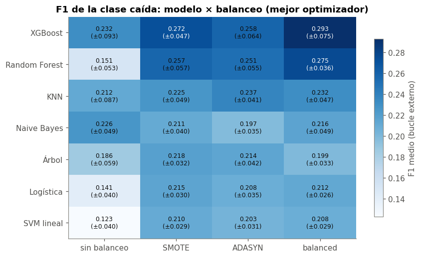
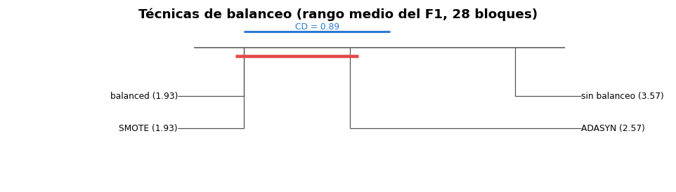
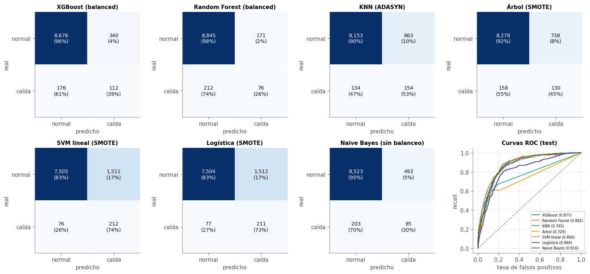
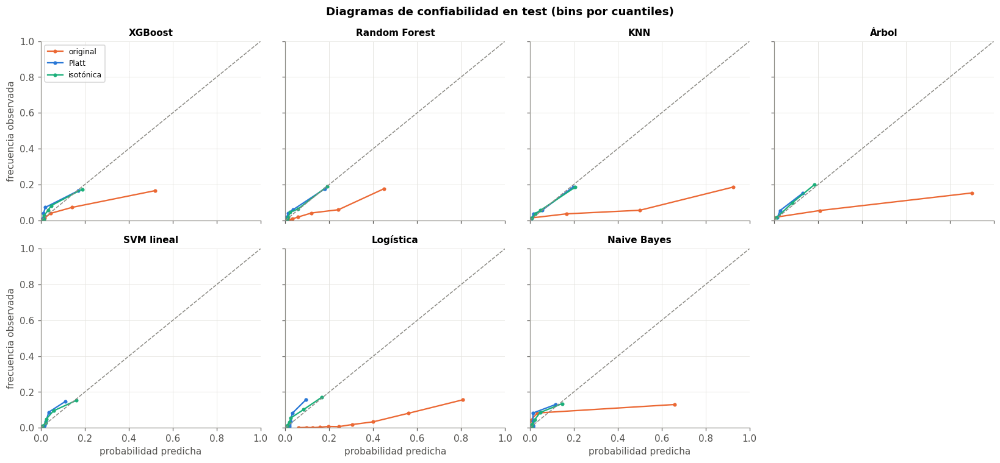
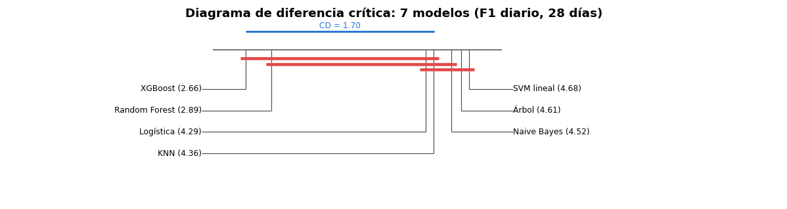

🚨 13. Clasificación: alerta de caída fuerte#
Los 112 modelos de clasificación (7 modelos × 4 balanceos × 4 optimizadores) predicen si mañana un negocio tendrá una caída fuerte (venta < 50 % de la mediana de su semana anterior; 3,7 % de los casos en train). La métrica de validación es el F1 de la clase caída (cap. 9.6).
Orden del capítulo: métricas del bucle externo → efecto del balanceo → el mejor de cada modelo en test (matriz de confusión, ROC, tabla de métricas) → calibración → comparación estadística (Friedman → Nemenyi → DeLong → tamaño del efecto).
import warnings
from itertools import combinations
import numpy as np
import pandas as pd
import matplotlib.pyplot as plt
from scipy import stats
from sklearn.calibration import CalibratedClassifierCV, calibration_curve
from sklearn.metrics import confusion_matrix, roc_curve, f1_score, brier_score_loss, precision_recall_curve
from comun import estilo, SEED, AZUL, NARANJA, VERDE, AMARILLO, GRIS, PALETA
from datos import preparar, partir, X_COLS
from experimentos import armar_maestra, cargar
from metricas import metricas_clf, ece
from modelos import MODELOS_CLF, BALANCEOS, crear_modelo, ajustar, puntaje
from estadistica import friedman_nemenyi, diagrama_cd, delong, holm, cliff_delta, magnitud_cliff, ic_bca_negocios
warnings.filterwarnings("ignore")
estilo()
train, test = partir(preparar())
y_tr, y_te = train["caida"].to_numpy(), test["caida"].to_numpy()
maestra = armar_maestra()
clf = maestra[maestra["tarea"] == "clf"].copy()
NOMBRE = {"knn": "KNN", "nb": "Naive Bayes", "logistica": "Logística", "arbol": "Árbol", "rf": "Random Forest", "xgb": "XGBoost", "svm": "SVM lineal"}
BAL = {"ninguno": "sin balanceo", "smote": "SMOTE", "adasyn": "ADASYN", "balanced": "balanced"}
OPT = {"grid": "Grid", "random": "Random", "bayes": "Bayes", "genetico": "Genético"}
print(f"{len(clf)} combinaciones; positivos: train {y_tr.mean():.2%}, test {y_te.mean():.2%}")
/opt/miniconda3/envs/ml_venv/lib/python3.9/site-packages/tqdm/auto.py:21: TqdmWarning: IProgress not found. Please update jupyter and ipywidgets. See https://ipywidgets.readthedocs.io/en/stable/user_install.html
from .autonotebook import tqdm as notebook_tqdm
112 combinaciones; positivos: train 3.68%, test 3.10%
📋 13.1 Bucle externo: F1 por modelo y balanceo#
Cada celda es el F1 medio de los 4 folds externos con el mejor optimizador de esa combinación modelo × balanceo (entre paréntesis, la desviación entre folds).
mejor_mb = clf.loc[clf.groupby(["modelo", "balanceo"])["f1_media"].idxmax()]
f1 = mejor_mb.pivot(index="modelo", columns="balanceo", values="f1_media")[BALANCEOS]
f1d = mejor_mb.pivot(index="modelo", columns="balanceo", values="f1_desv")[BALANCEOS]
f1 = f1.loc[f1.max(axis=1).sort_values(ascending=False).index]
fig, ax = plt.subplots(figsize=(8, 4.8))
im = ax.imshow(f1.values, cmap="Blues", aspect="auto")
ax.set_xticks(range(4)); ax.set_xticklabels([BAL[b] for b in f1.columns])
ax.set_yticks(range(len(f1))); ax.set_yticklabels([NOMBRE[m] for m in f1.index])
ax.grid(False)
for i in range(f1.shape[0]):
for j in range(f1.shape[1]):
v, s = f1.iloc[i, j], f1d.loc[f1.index[i], f1.columns[j]]
ax.text(j, i, f"{v:.3f}\n(±{s:.3f})", ha="center", va="center", fontsize=8,
color="white" if v > np.nanmean(f1.values) + 0.05 else "#0b0b0b")
fig.colorbar(im, ax=ax, shrink=0.8, label="F1 medio (bucle externo)")
ax.set_title("F1 de la clase caída: modelo × balanceo (mejor optimizador)")
plt.tight_layout()

# todas las métricas del bucle externo para los 28 modelo × balanceo (con su mejor optimizador)
def pm(df, m):
return df[f"{m}_media"].round(3).astype(str) + " ± " + df[f"{m}_desv"].round(3).astype(str)
t = pd.DataFrame({"modelo": mejor_mb["modelo"].map(NOMBRE), "balanceo": mejor_mb["balanceo"].map(BAL),
"optimizador": mejor_mb["optimizador"].map(OPT), "F1": pm(mejor_mb, "f1"),
"precision": pm(mejor_mb, "precision"), "recall": pm(mejor_mb, "recall"),
"AUC": pm(mejor_mb, "auc"), "AP": pm(mejor_mb, "ap"), "accuracy": pm(mejor_mb, "accuracy"),
"_o": mejor_mb["f1_media"]})
t.sort_values("_o", ascending=False).drop(columns="_o").set_index(["modelo", "balanceo"])
| optimizador | F1 | precision | recall | AUC | AP | accuracy | ||
|---|---|---|---|---|---|---|---|---|
| modelo | balanceo | |||||||
| XGBoost | balanced | Bayes | 0.293 ± 0.075 | 0.225 ± 0.063 | 0.453 ± 0.168 | 0.857 ± 0.068 | 0.296 ± 0.089 | 0.914 ± 0.033 |
| Random Forest | balanced | Genético | 0.275 ± 0.036 | 0.198 ± 0.007 | 0.47 ± 0.15 | 0.863 ± 0.052 | 0.281 ± 0.067 | 0.905 ± 0.038 |
| XGBoost | SMOTE | Grid | 0.272 ± 0.047 | 0.19 ± 0.042 | 0.489 ± 0.069 | 0.843 ± 0.067 | 0.257 ± 0.064 | 0.894 ± 0.044 |
| ADASYN | Random | 0.258 ± 0.064 | 0.175 ± 0.041 | 0.517 ± 0.171 | 0.845 ± 0.077 | 0.243 ± 0.074 | 0.89 ± 0.019 | |
| Random Forest | SMOTE | Random | 0.257 ± 0.057 | 0.168 ± 0.041 | 0.58 ± 0.145 | 0.856 ± 0.064 | 0.248 ± 0.064 | 0.874 ± 0.021 |
| ADASYN | Random | 0.251 ± 0.055 | 0.163 ± 0.04 | 0.578 ± 0.153 | 0.857 ± 0.067 | 0.246 ± 0.06 | 0.871 ± 0.02 | |
| KNN | ADASYN | Bayes | 0.237 ± 0.041 | 0.157 ± 0.036 | 0.507 ± 0.091 | 0.758 ± 0.053 | 0.145 ± 0.031 | 0.876 ± 0.022 |
| balanced | Grid | 0.232 ± 0.047 | 0.157 ± 0.039 | 0.46 ± 0.075 | 0.688 ± 0.042 | 0.169 ± 0.029 | 0.884 ± 0.02 | |
| XGBoost | sin balanceo | Random | 0.232 ± 0.093 | 0.423 ± 0.111 | 0.163 ± 0.077 | 0.836 ± 0.072 | 0.266 ± 0.084 | 0.958 ± 0.016 |
| Naive Bayes | sin balanceo | Genético | 0.226 ± 0.049 | 0.169 ± 0.042 | 0.358 ± 0.102 | 0.808 ± 0.041 | 0.153 ± 0.033 | 0.908 ± 0.015 |
| KNN | SMOTE | Genético | 0.225 ± 0.049 | 0.138 ± 0.034 | 0.632 ± 0.11 | 0.81 ± 0.067 | 0.194 ± 0.048 | 0.835 ± 0.019 |
| Árbol | SMOTE | Genético | 0.218 ± 0.032 | 0.143 ± 0.033 | 0.497 ± 0.088 | 0.722 ± 0.048 | 0.117 ± 0.018 | 0.859 ± 0.056 |
| Naive Bayes | balanced | Grid | 0.216 ± 0.049 | 0.135 ± 0.036 | 0.557 ± 0.123 | 0.807 ± 0.04 | 0.153 ± 0.033 | 0.847 ± 0.024 |
| Logística | SMOTE | Random | 0.215 ± 0.03 | 0.126 ± 0.019 | 0.755 ± 0.118 | 0.854 ± 0.043 | 0.232 ± 0.05 | 0.789 ± 0.044 |
| Árbol | ADASYN | Grid | 0.214 ± 0.042 | 0.13 ± 0.028 | 0.626 ± 0.113 | 0.813 ± 0.058 | 0.158 ± 0.033 | 0.824 ± 0.038 |
| Logística | balanced | Random | 0.212 ± 0.026 | 0.123 ± 0.016 | 0.763 ± 0.102 | 0.853 ± 0.047 | 0.228 ± 0.047 | 0.782 ± 0.052 |
| KNN | sin balanceo | Grid | 0.212 ± 0.087 | 0.444 ± 0.105 | 0.141 ± 0.065 | 0.689 ± 0.043 | 0.209 ± 0.05 | 0.959 ± 0.017 |
| Naive Bayes | SMOTE | Random | 0.211 ± 0.04 | 0.129 ± 0.027 | 0.592 ± 0.105 | 0.801 ± 0.039 | 0.152 ± 0.033 | 0.831 ± 0.033 |
| SVM lineal | SMOTE | Bayes | 0.21 ± 0.029 | 0.122 ± 0.018 | 0.758 ± 0.086 | 0.848 ± 0.047 | 0.22 ± 0.044 | 0.781 ± 0.051 |
| balanced | Grid | 0.208 ± 0.029 | 0.121 ± 0.018 | 0.754 ± 0.088 | 0.847 ± 0.05 | 0.221 ± 0.043 | 0.778 ± 0.053 | |
| Logística | ADASYN | Genético | 0.208 ± 0.035 | 0.12 ± 0.022 | 0.778 ± 0.098 | 0.852 ± 0.043 | 0.233 ± 0.057 | 0.773 ± 0.044 |
| SVM lineal | ADASYN | Genético | 0.203 ± 0.031 | 0.118 ± 0.02 | 0.765 ± 0.081 | 0.848 ± 0.044 | 0.22 ± 0.049 | 0.769 ± 0.051 |
| Árbol | balanced | Random | 0.199 ± 0.033 | 0.129 ± 0.02 | 0.44 ± 0.095 | 0.667 ± 0.057 | 0.116 ± 0.039 | 0.863 ± 0.041 |
| Naive Bayes | ADASYN | Random | 0.197 ± 0.035 | 0.117 ± 0.023 | 0.649 ± 0.104 | 0.799 ± 0.036 | 0.15 ± 0.033 | 0.798 ± 0.04 |
| Árbol | sin balanceo | Random | 0.186 ± 0.059 | 0.231 ± 0.029 | 0.161 ± 0.068 | 0.606 ± 0.056 | 0.126 ± 0.028 | 0.947 ± 0.018 |
| Random Forest | sin balanceo | Grid | 0.151 ± 0.053 | 0.603 ± 0.16 | 0.087 ± 0.033 | 0.846 ± 0.061 | 0.267 ± 0.064 | 0.961 ± 0.016 |
| Logística | sin balanceo | Random | 0.141 ± 0.04 | 0.517 ± 0.09 | 0.082 ± 0.025 | 0.84 ± 0.06 | 0.221 ± 0.045 | 0.96 ± 0.015 |
| SVM lineal | sin balanceo | Genético | 0.123 ± 0.04 | 0.553 ± 0.099 | 0.07 ± 0.024 | 0.855 ± 0.053 | 0.235 ± 0.042 | 0.961 ± 0.015 |
Interpretación#
El mejor es XGBoost con
balanced(F1 = 0,293 ± 0,075), seguido de Random Forest conbalanced(0,275 ± 0,036) y XGBoost con SMOTE (0,272). Los ensambles de árboles vuelven a ganar, como en regresión.Un F1 de ~0,3 es bajo en términos absolutos, pero hay que leerlo frente a la tasa base: con 3,7 % de positivos, un clasificador al azar que marque el mismo 3,7 % tendría F1 ≈ 0,04, y uno que avise siempre, F1 ≈ 0,07. El AUC de ~0,86 dice que el modelo ordena bien los riesgos; el F1 bajo dice que separar con precisión las caídas reales es difícil, porque muchas no tienen señal en los datos del día anterior (cap. 14).
Sin balanceo los modelos tienen alta precision (0,42–0,60) pero recall muy bajo (0,16 en XGBoost): casi nunca predicen caída, porque con 26:1 casi ningún caso supera 0,5 de probabilidad.
La desviación entre folds es grande (±0,03 a ±0,09). Los folds con festivos tienen el doble de caídas y son más fáciles de detectar.
⚖️ 13.2 ¿Sirve el balanceo?#
Se compara cada técnica contra sin balanceo dentro del mismo modelo y optimizador (28 pares por técnica). Además del F1, se miran el recall (cuántas caídas se detectan), la precision y el AUC. El AUC no depende del umbral, así que dice si el balanceo mejora la capacidad de ordenar los casos o solo mueve el umbral.
base = clf[clf["balanceo"] == "ninguno"].set_index(["modelo", "optimizador"])
filas = []
for b in ["smote", "adasyn", "balanced"]:
otro = clf[clf["balanceo"] == b].set_index(["modelo", "optimizador"]).loc[base.index]
for m in ["f1", "recall", "precision", "auc"]:
d = otro[f"{m}_media"] - base[f"{m}_media"]
w = stats.wilcoxon(d) if (d != 0).any() else None
filas.append({"técnica": BAL[b], "métrica": m, "cambio medio": d.mean(), "mediana": d.median(),
"mejora en (de 28)": int((d > 0).sum()), "p Wilcoxon": w.pvalue if w else np.nan})
bal = pd.DataFrame(filas)
bal["p Holm"] = holm(bal["p Wilcoxon"].fillna(1))
bal.pivot(index="técnica", columns="métrica", values="cambio medio").round(3)
| métrica | auc | f1 | precision | recall |
|---|---|---|---|---|
| técnica | ||||
| ADASYN | 0.03 | 0.05 | -0.32 | 0.49 |
| SMOTE | 0.03 | 0.05 | -0.31 | 0.47 |
| balanced | 0.01 | 0.06 | -0.30 | 0.43 |
bal.set_index(["técnica", "métrica"]).round(4)
| cambio medio | mediana | mejora en (de 28) | p Wilcoxon | p Holm | ||
|---|---|---|---|---|---|---|
| técnica | métrica | |||||
| SMOTE | f1 | 0.05 | 0.07 | 24 | 0.00 | 0.00 |
| recall | 0.47 | 0.44 | 28 | 0.00 | 0.00 | |
| precision | -0.31 | -0.38 | 0 | 0.00 | 0.00 | |
| auc | 0.03 | 0.01 | 18 | 0.00 | 0.01 | |
| ADASYN | f1 | 0.05 | 0.07 | 24 | 0.00 | 0.00 |
| recall | 0.49 | 0.46 | 28 | 0.00 | 0.00 | |
| precision | -0.32 | -0.39 | 0 | 0.00 | 0.00 | |
| auc | 0.03 | 0.01 | 18 | 0.01 | 0.01 | |
| balanced | f1 | 0.06 | 0.07 | 24 | 0.00 | 0.00 |
| recall | 0.43 | 0.36 | 28 | 0.00 | 0.00 | |
| precision | -0.30 | -0.36 | 0 | 0.00 | 0.00 | |
| auc | 0.01 | 0.01 | 19 | 0.00 | 0.01 |
# Friedman entre las 4 técnicas de balanceo, con bloques = modelo × optimizador (28)
tabla = clf.pivot_table(index=["modelo", "optimizador"], columns="balanceo", values="f1_media")
fn_bal = friedman_nemenyi(-tabla.rename(columns=BAL)) # menos F1 = pérdida
print(f"Friedman entre balanceos: χ² = {fn_bal['chi2']:.1f}, p = {fn_bal['p']:.1e}, CD = {fn_bal['cd']:.2f}")
fig, ax = plt.subplots(figsize=(9, 2.6))
diagrama_cd(fn_bal["rangos"], fn_bal["cd"], ax, "Técnicas de balanceo (rango medio del F1, 28 bloques)")
plt.tight_layout()
Friedman entre balanceos: χ² = 30.3, p = 1.2e-06, CD = 0.89

Interpretación#
Las tres técnicas mejoran el F1 en 24 de 28 casos, en +0,05 a +0,06 en promedio, todas significativas después de Holm. Cómo lo logran es muy claro:
el recall sube muchísimo (+0,43 a +0,49, en los 28 casos);
la precision baja casi lo mismo (−0,30 a −0,32, en los 28 casos);
el AUC casi no cambia (+0,01 a +0,03).
O sea, el balanceo no le enseña al modelo a distinguir mejor las caídas: el AUC, que mide el orden, apenas se mueve. Lo que hace es mover el umbral efectivo, para que el modelo diga «caída» más veces. Con una clase de 3,7 %, el umbral por defecto de 0,5 es demasiado alto, y balancear equivale a bajarlo.
Friedman entre técnicas (p = 1,2 × 10⁻⁶):
balancedy SMOTE empatan en el mejor rango medio (1,93), ADASYN queda en 2,57 y sin balanceo en 3,57. La CD es 0,89, así que las tres técnicas son significativamente mejores que no balancear (por más de la CD) y no se distinguen entre sí.Recomendación práctica:
class_weight='balanced'. Da el mismo resultado que SMOTE, no genera datos sintéticos, no duplica el tamaño de train (SMOTE y ADASYN duplican el tiempo de entrenamiento, cap. 11) y no depende de distancias en un espacio con variables muy colineales.
🎯 13.3 El mejor de cada modelo en test#
Para cada uno de los 7 modelos se elige la combinación balanceo × optimizador con mayor F1 en el bucle externo, sin mirar test. En test se muestran la matriz de confusión, las curvas ROC y la tabla de métricas.
elegido = clf.loc[clf.groupby("modelo")["f1_media"].idxmax()].set_index("modelo")
res = {m: cargar("clf", m, elegido.loc[m, "balanceo"], elegido.loc[m, "optimizador"]) for m in MODELOS_CLF}
pred = {m: res[m]["pred_test"]["pred"].to_numpy() for m in MODELOS_CLF}
score = {m: res[m]["pred_test"]["score"].to_numpy() for m in MODELOS_CLF}
filas = []
for m in MODELOS_CLF:
met = metricas_clf(y_te, pred[m], score[m], proba=m != "svm")
filas.append({"modelo": NOMBRE[m], "balanceo": BAL[elegido.loc[m, "balanceo"]], "optimizador": OPT[elegido.loc[m, "optimizador"]],
"Accuracy": met["accuracy"], "Precision": met["precision"], "Recall": met["recall"], "F1-score": met["f1"],
"AUC": met["auc"], "AP": met["ap"], "F1 bucle externo": elegido.loc[m, "f1_media"]})
tabla_test = pd.DataFrame(filas).set_index("modelo").sort_values("F1-score", ascending=False)
orden_m = [{v: k for k, v in NOMBRE.items()}[n] for n in tabla_test.index]
tabla_test.round(3)
| balanceo | optimizador | Accuracy | Precision | Recall | F1-score | AUC | AP | F1 bucle externo | |
|---|---|---|---|---|---|---|---|---|---|
| modelo | |||||||||
| XGBoost | balanced | Bayes | 0.94 | 0.25 | 0.39 | 0.30 | 0.88 | 0.29 | 0.29 |
| Random Forest | balanced | Genético | 0.96 | 0.31 | 0.26 | 0.28 | 0.88 | 0.30 | 0.28 |
| KNN | ADASYN | Bayes | 0.89 | 0.15 | 0.54 | 0.24 | 0.77 | 0.13 | 0.24 |
| Árbol | SMOTE | Genético | 0.90 | 0.15 | 0.45 | 0.23 | 0.73 | 0.11 | 0.22 |
| SVM lineal | SMOTE | Bayes | 0.83 | 0.12 | 0.74 | 0.21 | 0.86 | 0.21 | 0.21 |
| Logística | SMOTE | Random | 0.83 | 0.12 | 0.73 | 0.21 | 0.87 | 0.22 | 0.21 |
| Naive Bayes | sin balanceo | Genético | 0.93 | 0.15 | 0.29 | 0.20 | 0.82 | 0.13 | 0.23 |
fig, axs = plt.subplots(2, 4, figsize=(15, 7))
for ax, m in zip(axs.ravel(), orden_m):
cm = confusion_matrix(y_te, pred[m])
ax.imshow(cm, cmap="Blues"); ax.grid(False)
for i in range(2):
for j in range(2):
ax.text(j, i, f"{cm[i, j]:,}\n({cm[i, j] / cm[i].sum():.0%})", ha="center", va="center",
color="white" if cm[i, j] > cm.max() / 2 else "#0b0b0b", fontsize=9)
ax.set_xticks([0, 1]); ax.set_xticklabels(["normal", "caída"]); ax.set_yticks([0, 1]); ax.set_yticklabels(["normal", "caída"])
ax.set_xlabel("predicho"); ax.set_ylabel("real"); ax.set_title(f"{NOMBRE[m]} ({BAL[elegido.loc[m, 'balanceo']]})", fontsize=10)
ax = axs.ravel()[-1]
for i, m in enumerate(orden_m):
fpr, tpr, _ = roc_curve(y_te, score[m])
ax.plot(fpr, tpr, color=PALETA[i], lw=1.3, label=f"{NOMBRE[m]} ({tabla_test.loc[NOMBRE[m], 'AUC']:.3f})")
ax.plot([0, 1], [0, 1], color=GRIS, ls="--", lw=1)
ax.set_xlabel("tasa de falsos positivos"); ax.set_ylabel("recall"); ax.set_title("Curvas ROC (test)", fontsize=10)
ax.legend(fontsize=6.5, loc="lower right")
plt.tight_layout()

Interpretación#
En test el orden se mantiene: XGBoost (F1 0,30, AUC 0,88) y Random Forest (0,28, 0,88) arriba; los demás entre 0,20 y 0,24. El F1 en test es muy parecido al del bucle externo (0,29 y 0,28), así que la validación anidada estimó bien.
Matrices de confusión: XGBoost detecta el 39 % de las caídas (112 de 288) y de cada 4 alertas una es caída real (precision 0,25). Random Forest es más conservador (recall 0,26, precision 0,31). La logística y la SVM, con SMOTE, detectan casi 3 de cada 4 caídas (recall 0,73–0,74) pero con unas 7 falsas alarmas por cada acierto (precision 0,12).
Cuál conviene depende del costo: si revisar un negocio es barato, sirve un modelo de recall alto; si cada alerta implica una visita, conviene XGBoost o Random Forest. Como su AUC es el más alto, el umbral se puede mover para elegir el punto de la curva ROC que convenga.
Accuracy entre 0,83 y 0,96: confirma que no sirve aquí. Naive Bayes (0,93) tiene el peor F1, y un modelo que nunca avisa tendría 0,97.
ROC: XGBoost, Random Forest, logística y SVM tienen AUC de 0,86–0,88; KNN (0,77) y el árbol (0,73) ordenan bastante peor.
🌡️ 13.4 Calibración de probabilidades#
Una alerta útil no solo ordena bien: si dice «30 % de probabilidad de caída», en 30 de cada 100 casos así debería haber caída. Se evalúa con el diagrama de confiabilidad, el Brier score (error cuadrático de la probabilidad) y el ECE (10 bins de igual ancho).
Recalibración. Cada modelo elegido se reentrena con train menos su última semana (27 ago – 2 sep), y esa semana se usa para ajustar el escalado de Platt (una logística sobre el puntaje) y la regresión isotónica (una función escalonada creciente). Se evalúa en test. La SVM no da probabilidades, solo distancias al hiperplano, así que para ella Platt es la única forma de obtener una probabilidad.
corte_cal = train["fecha"].max() - pd.Timedelta(days=6)
ajuste, calib = train["fecha"] < corte_cal, train["fecha"] >= corte_cal
filas, curvas = [], {}
for m in orden_m:
b = elegido.loc[m, "balanceo"]
mod = crear_modelo("clf", m, res[m]["params_final"], b)
ajustar(mod, train.loc[ajuste, X_COLS], y_tr[ajuste.values], "clf", m, b)
s_cal, s_te = puntaje(mod, train.loc[calib, X_COLS]), puntaje(mod, test[X_COLS])
versiones = {}
if m != "svm":
versiones["original"] = s_te
for metodo in ["sigmoid", "isotonic"]:
cal = CalibratedClassifierCV(mod, method=metodo, cv="prefit")
cal.fit(train.loc[calib, X_COLS], y_tr[calib.values])
versiones["Platt" if metodo == "sigmoid" else "isotónica"] = cal.predict_proba(test[X_COLS])[:, 1]
for v, p in versiones.items():
filas.append({"modelo": NOMBRE[m], "balanceo": BAL[b], "versión": v, "Brier": brier_score_loss(y_te, p),
"ECE": ece(y_te, p), "prob. media": p.mean(), "F1 (umbral 0,5)": f1_score(y_te, p >= 0.5)})
curvas[(m, v)] = p
cal_tabla = pd.DataFrame(filas).set_index(["modelo", "versión"])
print(f"tasa real de caídas en test: {y_te.mean():.3f}")
cal_tabla.round(4)
tasa real de caídas en test: 0.031
| balanceo | Brier | ECE | prob. media | F1 (umbral 0,5) | ||
|---|---|---|---|---|---|---|
| modelo | versión | |||||
| XGBoost | original | balanced | 0.04 | 0.04 | 0.07 | 0.28 |
| Platt | balanced | 0.03 | 0.01 | 0.03 | 0.24 | |
| isotónica | balanced | 0.03 | 0.01 | 0.03 | 0.24 | |
| Random Forest | original | balanced | 0.04 | 0.06 | 0.09 | 0.30 |
| Platt | balanced | 0.03 | 0.01 | 0.03 | 0.20 | |
| isotónica | balanced | 0.03 | 0.01 | 0.03 | 0.24 | |
| KNN | original | ADASYN | 0.09 | 0.12 | 0.13 | 0.21 |
| Platt | ADASYN | 0.03 | 0.00 | 0.03 | 0.00 | |
| isotónica | ADASYN | 0.03 | 0.01 | 0.03 | 0.00 | |
| Árbol | original | SMOTE | 0.08 | 0.09 | 0.10 | 0.23 |
| Platt | SMOTE | 0.03 | 0.01 | 0.03 | 0.00 | |
| isotónica | SMOTE | 0.03 | 0.01 | 0.03 | 0.00 | |
| SVM lineal | Platt | SMOTE | 0.03 | 0.01 | 0.02 | 0.13 |
| isotónica | SMOTE | 0.03 | 0.01 | 0.03 | 0.12 | |
| Logística | original | SMOTE | 0.13 | 0.26 | 0.29 | 0.22 |
| Platt | SMOTE | 0.03 | 0.01 | 0.02 | 0.14 | |
| isotónica | SMOTE | 0.03 | 0.01 | 0.03 | 0.13 | |
| Naive Bayes | original | sin balanceo | 0.06 | 0.07 | 0.07 | 0.20 |
| Platt | sin balanceo | 0.03 | 0.01 | 0.02 | 0.00 | |
| isotónica | sin balanceo | 0.03 | 0.01 | 0.02 | 0.00 |
fig, axs = plt.subplots(2, 4, figsize=(15, 7), sharex=True, sharey=True)
for ax, m in zip(axs.ravel(), orden_m):
for v, color in [("original", NARANJA), ("Platt", AZUL), ("isotónica", VERDE)]:
if (m, v) not in curvas:
continue
fr, pm_ = calibration_curve(y_te, curvas[(m, v)], n_bins=10, strategy="quantile")
ax.plot(pm_, fr, marker="o", ms=3, color=color, label=v)
ax.plot([0, 1], [0, 1], color=GRIS, ls="--", lw=1)
ax.set_title(NOMBRE[m], fontsize=10); ax.set_xlim(0, 1); ax.set_ylim(0, 1)
axs.ravel()[0].legend(fontsize=8)
for ax in axs[:, 0]: ax.set_ylabel("frecuencia observada")
for ax in axs[-1]: ax.set_xlabel("probabilidad predicha")
axs.ravel()[-1].axis("off")
plt.suptitle("Diagramas de confiabilidad en test (bins por cuantiles)", fontweight="bold")
plt.tight_layout()

Interpretación#
Todos los modelos están mal calibrados en su versión original, y siempre en el mismo sentido: sobreestiman la probabilidad de caída. La probabilidad media predicha va de 0,07 (XGBoost) a 0,29 (logística con SMOTE) cuando la tasa real es 0,03. Es la consecuencia directa del balanceo: el modelo aprendió con un 50 % de caídas (SMOTE) o con pesos que las igualan, así que sus probabilidades corresponden a ese mundo y no al real. El ECE va de 0,04 (XGBoost) a 0,26 (logística).
Platt e isotónica corrigen la calibración: el ECE baja a ~0,01 y el Brier a 0,03 en todos los modelos, y la probabilidad media pasa a 0,02–0,03, igual a la real. En los diagramas, las curvas recalibradas quedan sobre la diagonal.
Pero el F1 con umbral 0,5 se desploma después de recalibrar, en algunos modelos hasta 0. Es coherente: con probabilidades bien calibradas y una clase de 3 %, casi ningún caso supera 0,5. Calibrar y elegir el umbral son dos decisiones distintas. Para una alerta: (1) se recalibra para que la probabilidad sea interpretable («este negocio tiene 30 % de probabilidad de caer mañana») y (2) se elige el umbral según el costo de las falsas alarmas (por ejemplo, alertar cuando P > 0,15).
La SVM, que no da probabilidades, obtiene con Platt una probabilidad bien calibrada (ECE 0,01).
📐 13.5 Comparación estadística#
Etapa 1: Friedman (ómnibus) y Etapa 2: Nemenyi#
Los bloques son los 28 días del bucle externo: para cada día se calcula el F1 de cada modelo sobre los ~450 negocios de ese día (en promedio ~18 caídas por día). Se hace para los 7 modelos (con su mejor balanceo y optimizador) y para las 112 combinaciones.
def f1_diario(r):
pv = r["pred_val"]
sub = train.iloc[pv["fila"]]
return pd.Series([f1_score(g["y"], g["p"], zero_division=0) for _, g in
pd.DataFrame({"y": sub["caida"].to_numpy(), "p": pv["pred"].to_numpy(), "f": sub["fecha"].to_numpy()}).groupby("f")])
f1_dia = pd.DataFrame({NOMBRE[m]: f1_diario(res[m]) for m in MODELOS_CLF})
fn7 = friedman_nemenyi(-f1_dia)
todas = {}
for _, fila in clf.iterrows():
todas[f"{fila['modelo']}·{fila['balanceo']}·{fila['optimizador']}"] = f1_diario(cargar("clf", fila["modelo"], fila["balanceo"], fila["optimizador"]))
todas = pd.DataFrame(todas)
fn112 = friedman_nemenyi(-todas)
pd.DataFrame([{"comparación": "7 modelos", "k": 7, "bloques (días)": fn7["n"], "χ² Friedman": fn7["chi2"], "g.l.": 6, "p": fn7["p"], "CD Nemenyi": fn7["cd"]},
{"comparación": "112 combinaciones", "k": 112, "bloques (días)": fn112["n"], "χ² Friedman": fn112["chi2"], "g.l.": 111, "p": fn112["p"], "CD Nemenyi": fn112["cd"]}]).set_index("comparación").round(4)
| k | bloques (días) | χ² Friedman | g.l. | p | CD Nemenyi | |
|---|---|---|---|---|---|---|
| comparación | ||||||
| 7 modelos | 7 | 28 | 26.04 | 6 | 0.00 | 1.70 |
| 112 combinaciones | 112 | 28 | 609.83 | 111 | 0.00 | 37.77 |
fig, ax = plt.subplots(figsize=(11, 3))
diagrama_cd(fn7["rangos"], fn7["cd"], ax, "Diagrama de diferencia crítica: 7 modelos (F1 diario, 28 días)")
plt.tight_layout()
top10 = fn112["rangos"].head(10)
print("las 10 mejores combinaciones por rango medio (de 112):")
print(top10.round(2).to_string())
las 10 mejores combinaciones por rango medio (de 112):
rf·balanced·random 25.43
xgb·balanced·bayes 27.25
xgb·balanced·random 28.14
rf·balanced·genetico 28.43
rf·balanced·bayes 28.71
xgb·balanced·grid 29.09
rf·balanced·grid 29.96
xgb·smote·bayes 31.05
xgb·balanced·genetico 31.61
rf·adasyn·random 33.57

Interpretación#
Friedman rechaza para los 7 modelos (χ² = 26,0, p < 0,001) y para las 112 combinaciones (χ² = 610).
Nemenyi con los 7 modelos (CD = 1,70): XGBoost (rango 2,66) y Random Forest (2,89) están arriba. La diferencia entre ellos (0,23) no es significativa. Contra los demás (4,29 a 4,68) la distancia de XGBoost es de 1,6 a 2,0: significativa contra Naive Bayes, el árbol y la SVM (más de la CD), justo en el límite contra KNN (1,70) y no significativa contra la logística (1,63). Con solo 28 bloques la prueba tiene poca potencia.
Con las 112 combinaciones la CD es 37,8 rangos, tan grande que casi todo queda conectado. Es el costo de comparar 112 cosas con 28 bloques. Aun así, las 7 mejores combinaciones son todas Random Forest o XGBoost con
balanced, y en el top 10 solo aparece otra técnica (SMOTE y ADASYN una vez cada una). El patrón es consistente aunque cada par por separado no sea significativo.
Comparaciones dirigidas: DeLong entre los 3 mejores#
La prueba de DeLong compara dos AUC calculadas sobre las mismas observaciones (test), teniendo en cuenta su correlación. Se aplica solo a los 3 mejores modelos del ranking de Friedman (3 pares), con corrección de Holm y de Benjamini-Hochberg. El intervalo de la diferencia de AUC es un bootstrap por negocios (1 000 réplicas, percentil). El tamaño del efecto es la delta de Cliff sobre el F1 diario del bucle externo.
from statsmodels.stats.multitest import multipletests
top3 = [{v: k for k, v in NOMBRE.items()}[n] for n in fn7["rangos"].index[:3]]
neg = test["negocio"].to_numpy(); grupos = np.unique(neg)
filas_neg = {g: np.where(neg == g)[0] for g in grupos}
rng = np.random.default_rng(SEED)
filas = []
for a, b in combinations(top3, 2):
auc_a, auc_b, z, p = delong(y_te, score[a], score[b])
difs = []
for _ in range(1000):
idx = np.concatenate([filas_neg[g] for g in rng.choice(grupos, len(grupos))])
if y_te[idx].min() == y_te[idx].max():
continue
difs.append(delong(y_te[idx], score[a][idx], score[b][idx])[0] - delong(y_te[idx], score[a][idx], score[b][idx])[1])
lo, hi = np.percentile(difs, [2.5, 97.5])
dc = cliff_delta(f1_dia[NOMBRE[a]], f1_dia[NOMBRE[b]])
filas.append({"A": NOMBRE[a], "B": NOMBRE[b], "AUC A": auc_a, "AUC B": auc_b, "diferencia": auc_a - auc_b,
"IC 95 % bootstrap": f"[{lo:.3f}, {hi:.3f}]", "z DeLong": z, "p crudo": p,
"delta de Cliff (F1 diario)": dc, "magnitud": magnitud_cliff(dc)})
dl = pd.DataFrame(filas)
dl["p Holm"] = holm(dl["p crudo"]); dl["p BH"] = multipletests(dl["p crudo"], method="fdr_bh")[1]
dl.round(4)
| A | B | AUC A | AUC B | diferencia | IC 95 % bootstrap | z DeLong | p crudo | delta de Cliff (F1 diario) | magnitud | p Holm | p BH | |
|---|---|---|---|---|---|---|---|---|---|---|---|---|
| 0 | XGBoost | Random Forest | 0.88 | 0.88 | -0.01 | [-0.015, 0.004] | -1.10 | 0.27 | 0.05 | despreciable | 0.27 | 0.27 |
| 1 | XGBoost | Logística | 0.88 | 0.87 | 0.01 | [-0.005, 0.025] | 1.51 | 0.13 | 0.36 | mediano | 0.26 | 0.20 |
| 2 | Random Forest | Logística | 0.88 | 0.87 | 0.02 | [0.003, 0.027] | 2.56 | 0.01 | 0.37 | mediano | 0.03 | 0.03 |
# intervalos BCa por negocios para el AUC y el F1 de test de los 3 mejores
from sklearn.metrics import roc_auc_score
filas = []
for m in top3:
auc_f = lambda i, m=m: roc_auc_score(y_te[i], score[m][i]) if y_te[i].min() < y_te[i].max() else np.nan
f1_f = lambda i, m=m: f1_score(y_te[i], pred[m][i], zero_division=0)
lo, hi = ic_bca_negocios(neg, auc_f, reps=500)
lo2, hi2 = ic_bca_negocios(neg, f1_f, reps=500)
filas.append({"modelo": NOMBRE[m], "AUC": roc_auc_score(y_te, score[m]), "IC 95 % AUC (BCa)": f"[{lo:.3f}, {hi:.3f}]",
"F1": f1_score(y_te, pred[m]), "IC 95 % F1 (BCa)": f"[{lo2:.3f}, {hi2:.3f}]"})
pd.DataFrame(filas).set_index("modelo").round(3)
| AUC | IC 95 % AUC (BCa) | F1 | IC 95 % F1 (BCa) | |
|---|---|---|---|---|
| modelo | ||||
| XGBoost | 0.88 | [0.853, 0.899] | 0.30 | [0.241, 0.372] |
| Random Forest | 0.88 | [0.862, 0.904] | 0.28 | [0.211, 0.376] |
| Logística | 0.87 | [0.843, 0.886] | 0.21 | [0.177, 0.246] |
Interpretación#
DeLong entre los 3 mejores del ranking (XGBoost, Random Forest, logística):
XGBoost contra Random Forest: AUC prácticamente igual (0,88), diferencia ≈ −0,01, no significativa (p = 0,27). El intervalo bootstrap contiene el 0. La delta de Cliff sobre el F1 diario es despreciable (0,05).
XGBoost contra logística: diferencia de AUC +0,01, no significativa (p Holm = 0,26), pero el efecto sobre el F1 diario es mediano (Cliff 0,36). La logística ordena casi igual de bien, pero su punto de corte con SMOTE da peor F1.
Random Forest contra logística: diferencia +0,02, significativa (p Holm = 0,03; IC [0,003; 0,027]) y efecto mediano en F1 (Cliff 0,37).
Intervalos BCa en test: el AUC de los tres está entre 0,84 y 0,90 con intervalos que se solapan. El F1 de XGBoost [0,24; 0,37] y el de Random Forest [0,21; 0,38] se solapan casi por completo, y los dos quedan por encima del de la logística [0,18; 0,25].
Conclusión de la secuencia completa (Friedman → Nemenyi → DeLong → Cliff): los ensambles de árboles balanceados son el mejor grupo. Entre XGBoost y Random Forest no hay diferencia demostrable.
🎲 13.6 Sensibilidad a la semilla#
Random Forest y XGBoost (con su balanceo e hiperparámetros elegidos), reentrenados con 5 semillas. Se compara la variación del F1 y del AUC en test con las diferencias entre modelos.
filas = []
for m in ["rf", "xgb"]:
b = elegido.loc[m, "balanceo"]
for s in [42, 7, 2026, 11, 123]:
mod = crear_modelo("clf", m, res[m]["params_final"], b, semilla=s)
ajustar(mod, train[X_COLS], y_tr, "clf", m, b)
filas.append({"modelo": NOMBRE[m], "semilla": s, "F1 test": f1_score(y_te, mod.predict(test[X_COLS])),
"AUC test": roc_auc_score(y_te, puntaje(mod, test[X_COLS]))})
sem = pd.DataFrame(filas)
sem.groupby("modelo")[["F1 test", "AUC test"]].agg(["mean", "std", "min", "max"]).round(4)
| F1 test | AUC test | |||||||
|---|---|---|---|---|---|---|---|---|
| mean | std | min | max | mean | std | min | max | |
| modelo | ||||||||
| Random Forest | 0.29 | 0.01 | 0.28 | 0.32 | 0.88 | 0.00 | 0.88 | 0.89 |
| XGBoost | 0.30 | 0.01 | 0.28 | 0.30 | 0.88 | 0.00 | 0.88 | 0.88 |
Interpretación#
Por semilla, el F1 en test varía con una desviación de ~0,01 (rango 0,28–0,32 en Random Forest) y el AUC con menos de 0,005. La variación del F1 por semilla es comparable a la diferencia entre XGBoost y Random Forest (0,30 contra 0,29), otra razón para no declarar un ganador entre los dos. En cambio, es mucho menor que la distancia a los demás modelos (≥ 0,06).